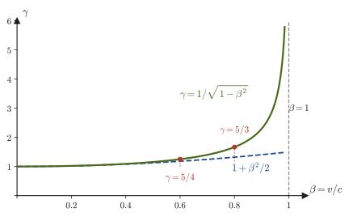

Chapter 54From Galilean Relativity to the Lorentz Transformation
Suppose you throw a ball in the direction of travel inside a moving train. If the speed of the ball as seen by a person on the train is $15\ \mathrm{m/s}$ and the speed of the train is $20\ \mathrm{m/s}$, then the speed of the ball as seen by a person standing on the ground is $35\ \mathrm{m/s}$. This is the “composition of velocities” (addition) that you learned in high school physics. For light alone, however, this perfectly natural addition fails. No matter how fast the light source is moving, and no matter how fast an observer chasing the light is running, the speed of light in vacuum remains $c=299\,792\,458\ \mathrm{m/s}$—and once we accept this fact, which runs against common sense, we have to rebuild our ideas of time and space from the ground up. The result is the special theory of relativity, which Einstein presented in 1905.
In this chapter, we first rewrite carefully, using differentiation, the idea that you have also used in high school, namely that “the laws of motion do not change when the coordinate system is changed” (Galilean relativity). Next we see that this idea does not work for electromagnetism (Maxwell's equations) and the speed of light, and that the historic experiment performed by Michelson and Morley at the end of the 19th century made this difficulty decisive. Then, from the two principles that “the laws of physics have the same form in every inertial frame of reference” and “the speed of light is the same in every inertial frame,” we derive the new transformation law between two coordinate systems—the Lorentz transformation—by solving the simultaneous equations without skipping a single line. Finally, we check that for motion slow compared with the speed of light the Lorentz transformation reduces to the Galilean transformation, and we see what the Lorentz transformation looks like when it is written as a matrix.
The overview of Part VIII (Chapters 54–58) is as follows. This chapter is the entrance to Part VIII.
- Chapter 54 (this chapter): Galilean relativity → the puzzle of the speed of light and the Michelson–Morley experiment → the two principles → the Lorentz transformation.
- Chapter 55: Lorentz contraction, time dilation, the lifetime of the muon, the relativistic Doppler effect, and the transformation law for velocities (consequences of the Lorentz transformation).
- Chapter 56: the relativity of simultaneity, spacetime diagrams, the invariant interval and causality, proper time, and rapidity.
- Chapter 57: four-vectors and the metric, the four-momentum, $E=mc^2$, and the kinematics of particle decays and collisions.
- Chapter 58: natural units $c=\hbar=1$, and the four-vector formulation of electromagnetism (the four-current and the four-potential).
This part is also preparation for reading about particle physics (the companion volume “Particle Physics” (AD 09)) and relativistic quantum mechanics (such as the Dirac equation). There, the discussion begins by writing the kinematics of particles in terms of the four-momentum and electromagnetism in terms of the four-potential, in every case in a form that does not change under Lorentz transformations (a covariant form). The Lorentz transformation derived in this chapter is the foundation of all of this.
- The derivation of the fact that the form of Newton's equation of motion does not change under the Galilean transformation $\bm{r}'=\bm{r}-\bm{v}t,\ t'=t$ (Galilean relativity), and the composition of velocities
- The fact that the form of the wave equation (the equation for electromagnetic waves that follows from Maxwell's equations) does change under the Galilean transformation, and the difficulty that the speed of light would depend on the observer (the luminiferous ether hypothesis)
- The apparatus of the Michelson–Morley experiment, the expected time difference $\Delta t\approx(L/c)(v^2/c^2)$, the shift of the interference fringes, and the meaning of the 1887 result (no shift was found)
- Einstein's two principles (the principle of relativity and the principle of the constancy of the speed of light)
- The procedure for deriving the Lorentz transformation $x'=(x-vt)/\sqrt{1-(v/c)^2}$, $t'=(t-vx/c^2)/\sqrt{1-(v/c)^2}$ from the equation of the wavefront of light and the assumption of a linear transformation (actually solving for the coefficients $A,B,C,D$)
- The dependence of the Lorentz factor $\gamma=1/\sqrt{1-\beta^2}$ on $\beta=v/c$, the reduction to the Galilean transformation for $v\ll c$, and the Lorentz transformation and its inverse written in matrix form
Source notes: Yasuhide Mochizuki, Physics Notes: Special Relativity, pp. 1–3.
54.1 Galilean Relativity
Suppose you are inside a train running straight at a constant speed on smooth rails, with the window curtains drawn so that you cannot see outside. If you throw a ball straight up, it falls back into your hand, and a cup on the table does not start to move. Experiments in mechanics performed inside the train alone cannot tell you whether the train is stopped or moving. The purpose of this section is to rewrite this experience using differentiation.
When a force $\bm{F}\ [\mathrm{N}]$ acts on a particle (point mass; an object whose size is ignored so that it is regarded as a single point) of mass $m\ [\mathrm{kg}]$ and its position is $\bm{r}=(x,y,z)$, Newton's equation of motion is
\begin{equation} m\frac{\dd^2\bm{r}}{\dd t^2}=\bm{F} \label{eq:54-eom} \end{equation}This is the equation of motion (Section 2.2). The $\dd^2\bm{r}/\dd t^2$ on the left side (also written $\ddot{\bm{r}}$ and read “r double dot”; it is the position vector differentiated twice with respect to time $t$) is the acceleration. Here we observe the motion of the particle from two coordinate systems. One is the coordinate system S fixed to the ground (origin O, axes $x,y,z$). The other is a coordinate system S′ (origin O′, axes $x',y',z'$, whose directions are kept parallel to those of S) that moves relative to S in uniform rectilinear motion with a constant velocity $\bm{v}$. You may think of S′ as the coordinate system fixed to the running train. Suppose the origins of S and S′ coincided at time $t=0$.
Then at time $t$, O′ is at the position $\bm{v}t$ in frame S (Figure 54.1). The position vector $\bm{r}$ of the particle P in frame S (from O to P) can be expressed by the vector sum “$\bm{v}t$ from O to O′, then $\bm{r}'$ from O′ to P,” so $\bm{r}=\bm{v}t+\bm{r}'$, that is,
\begin{equation} \bm{r}'=\bm{r}-\bm{v}t \label{eq:54-galilei-r} \end{equation}Here $\bm{r}'$ is the position vector of the particle measured in frame S′, and $\bm{v}$ is a constant vector independent of time (constant in both magnitude and direction). We also assume that the clocks of S and S′ keep pointing to the same time ($t'=t$). This assumption that “time flows in the same way regardless of the coordinate system” is so natural in everyday experience that we normally are not even aware of it. But, as we will see later, it is precisely this assumption that will be reworked in the theory of relativity.
Definition 54.1: Galilean transformation
Let S′ be a coordinate system moving with a constant velocity $\bm{v}$ relative to an inertial frame of reference S. The transformation that determines the coordinates and time $(\bm{r}',t')$ in S′ from the coordinates and time $(\bm{r},t)$ in S according to
\begin{equation} \bm{r}'=\bm{r}-\bm{v}t,\qquad t'=t \label{eq:54-galilei} \end{equation}is called the Galilean transformation. When S′ moves in the positive direction of the $x$ axis of S with speed $v$, the transformation written in components becomes
$$ x'=x-vt,\qquad y'=y,\qquad z'=z,\qquad t'=t $$Galileo Galilei wrote a thought experiment to the effect that “events inside a ship moving at a uniform speed cannot be distinguished from those inside a ship moored in the harbor,” and the transformation bears his name.
Now let us rewrite the equation of motion \eqref{eq:54-eom} in the language of frame S′. How is the acceleration $\dd^2\bm{r}'/\dd t^2$ observed in frame S′ related to the acceleration in frame S?
Derivation: Acceleration under the Galilean transformation
Since $t'=t$ by Eq. \eqref{eq:54-galilei}, the time derivative $\dd/\dd t'$ in frame S′ is the same as the time derivative $\dd/\dd t$ in frame S. Differentiate both sides of Eq. \eqref{eq:54-galilei-r} once with respect to $t$. Since $\bm{v}$ is a constant vector, each component is the derivative of a first-degree polynomial in $t$, as in $\dd(v_xt)/\dd t=v_x$, so that $\dd(\bm{v}t)/\dd t=\bm{v}$:
$$ \frac{\dd\bm{r}'}{\dd t}=\frac{\dd\bm{r}}{\dd t}-\bm{v}=\dot{\bm{r}}-\bm{v} $$This is the transformation law of velocity (velocity in frame S′ = velocity in frame S $-\ \bm{v}$). Differentiate once more with respect to $t$. Since $\bm{v}$ is a constant vector independent of time, $\dd\bm{v}/\dd t=\bm{0}$:
\begin{equation} \frac{\dd^2}{\dd t^2}\bm{r}'=\frac{\dd}{\dd t}\left(\dot{\bm{r}}-\bm{v}\right)=\frac{\dd^2\bm{r}}{\dd t^2}-\bm{0}=\frac{\dd^2\bm{r}}{\dd t^2} \label{eq:54-acc-invariant} \end{equation}That is, the acceleration takes the same value in frame S and in frame S′. Substituting this result into the left side of the equation of motion \eqref{eq:54-eom} and noting that $m\,\dd^2\bm{r}/\dd t^2=m\,\dd^2\bm{r}'/\dd t^2$, we obtain
\begin{equation} m\frac{\dd^2\bm{r}'}{\dd t^2}=\bm{F} \label{eq:54-eom-prime} \end{equation}This has exactly the same form as Eq. \eqref{eq:54-eom} in frame S.
∎
Law 54.1: Galilean relativity
Between coordinate systems in uniform motion (inertial frames), the form of the fundamental equation of motion (Newton's equation of motion) does not change. This is called Galilean relativity.
Intuition: What “quite obvious” means
This conclusion is, intuitively, quite obvious. If you throw a ball straight up inside a Shinkansen bullet train running at a constant speed, the ball falls back into your hand. To a person inside the train, this is just a vertical upward throw (a motion under the gravitational force $-mg$ alone). On the other hand, to a person standing on the ground, the ball traces a parabola while keeping the same horizontal velocity as the train. The trajectories seen by the two observers are different, but both satisfy an equation of motion of the same form, $m\ddot{\bm{r}}=\bm{F}$ ($\bm{F}=-mg\bm{e}_z$; take the $z$ axis vertically upward and let $\bm{e}_z$ be the unit vector in that direction). Therefore, from experiments on motion alone, we cannot decide “which coordinate system is truly at rest and which is moving.” From the standpoint of the laws of mechanics, all coordinate systems moving at a uniform velocity are on an equal footing (the “inertial frame” learned in high school corresponds to this).
Caution: Two assumptions that mattered in this proof
(i) In Eq. \eqref{eq:54-acc-invariant} we used the fact that $\bm{v}$ is a constant vector. If S′ is accelerating and $\bm{v}$ changes with time, then $\dd\bm{v}/\dd t\neq\bm{0}$, so $m\ddot{\bm{r}}'=\bm{F}-m\dot{\bm{v}}$, and an extra term, the fictitious force (inertial force), appears in the equation of motion (Section 9.1). Galilean relativity holds only between coordinate systems in uniform motion.
(ii) We assumed that the force $\bm{F}$ has the same value in frame S and in frame S′. When the force is determined only by the relative positions of the particles ($\bm{r}_1-\bm{r}_2$) (universal gravitation, the Coulomb force, the spring force, and so on), this indeed holds, since $\bm{r}_1'-\bm{r}_2'=(\bm{r}_1-\bm{v}t)-(\bm{r}_2-\bm{v}t)=\bm{r}_1-\bm{r}_2$. A force that depends on velocity, such as a resistive force, also has the same value as long as it is determined by the “velocity relative to the other body (air, etc.),” because the relative velocity is unchanged, $\dot{\bm{r}}-\bm{u}\to(\dot{\bm{r}}-\bm{v})-(\bm{u}-\bm{v})$ (Exercise 54.1).
Example 54.1: Speed of a ball thrown inside a train
Let S be the coordinate system fixed to the ground and S′ the coordinate system fixed to a train running along a straight line at a constant speed $V=20\ \mathrm{m/s}$, and take the direction of travel of the train as the positive $x$ direction. At time $t=0$, a person in the train threw a ball horizontally at a speed of $15\ \mathrm{m/s}$ relative to the train (taking the person's position at that moment as the origin of both S and S′). Find the velocity of the ball as seen from the ground when it is thrown (a) in the direction of travel and (b) in the direction opposite to the direction of travel. (c) For case (a), express the position of the ball $2.0\ \mathrm{s}$ later in coordinates, as it would be expressed by the person in the train and by the person on the ground, respectively. Neglect any forces acting on the ball.
Solution. From the Galilean transformation $x'=x-Vt,\ t'=t$ we get $x=x'+Vt$. Differentiating this with respect to $t$, we find that the velocity $u=\dot x$ in frame S and the velocity $u'=\dot x'$ in frame S′ are related by
$$ u=u'+V $$(a) Since $u'=+15\ \mathrm{m/s}$, $u=15+20=35\ \mathrm{m/s}$ (in the $+x$ direction). (b) Since $u'=-15\ \mathrm{m/s}$, $u=-15+20=5\ \mathrm{m/s}$. Seen from the ground, even a ball thrown backward moves forward (because the train is faster). (c) Since the forces acting on the ball are neglected, the ball undergoes uniform rectilinear motion in frame S′, and $x'=u't'=15\times2.0=30\ \mathrm{m}$. The coordinate for the person on the ground is $x=x'+Vt=30+20\times2.0=70\ \mathrm{m}$. This also agrees with $x=ut=35\times2.0=70\ \mathrm{m}$.
Example 54.2: Momentum and kinetic energy have different values in different coordinate systems
Object A of mass $2\ \mathrm{kg}$ moving at a speed of $3\ \mathrm{m/s}$ collides with object B of mass $1\ \mathrm{kg}$, which was at rest on the same straight line, in a perfectly inelastic collision (after the collision they stick together and move as one). In both frame S (the ground) and frame S′, which moves at a constant speed of $1\ \mathrm{m/s}$ in the $+x$ direction of S, find the sum of the momenta and the sum of the kinetic energies before and after the collision, and verify that conservation of momentum holds in both frames and that the decrease in kinetic energy is the same in both.
Solution. Frame S: Let $u_{\mathrm f}$ be the common velocity after the collision. By conservation of momentum, $2\times3+1\times0=(2+1)u_{\mathrm f}$, so $u_{\mathrm f}=2\ \mathrm{m/s}$. The sum of the momenta is $6\ \mathrm{kg\,m/s}$ both before and after. The sum of the kinetic energies is $\frac12\cdot2\cdot3^2+0=9\ \mathrm J$ before the collision and $\frac12\cdot3\cdot2^2=6\ \mathrm J$ after the collision, so the decrease is $3\ \mathrm J$.
Frame S′: Since velocities transform as $u'=u-1$, before the collision A has $2\ \mathrm{m/s}$ and B has $-1\ \mathrm{m/s}$, and after the collision $u_{\mathrm f}'=2-1=1\ \mathrm{m/s}$. The sum of the momenta is $2\times2+1\times(-1)=3\ \mathrm{kg\,m/s}$ before the collision and $3\times1=3\ \mathrm{kg\,m/s}$ after the collision, so momentum is conserved in frame S′ as well (the value differs from that in frame S, but it is the same before and after). The sum of the kinetic energies is $\frac12\cdot2\cdot2^2+\frac12\cdot1\cdot(-1)^2=4.5\ \mathrm J$ before the collision and $\frac12\cdot3\cdot1^2=1.5\ \mathrm J$ after the collision; the decrease is $3\ \mathrm J$, which agrees with the decrease in frame S.
Thus, the values themselves of momentum and kinetic energy change with the coordinate system ($\bm{p}'=\bm{p}-m\bm{v}$, $K'=K-m\bm{v}\cdot\dot{\bm{r}}+\frac12mv^2$), but the “form of a law,” such as the equation of motion, conservation of momentum, and the decrease in energy (the amount converted into heat and so on), does not change in any inertial frame.
54.2 The Puzzle of the Speed of Light — Maxwell's Equations and the Galilean Transformation
As we saw in the previous section, Newtonian mechanics satisfies Galilean relativity, the statement that “all coordinate systems moving at constant velocity are equivalent.” What about electromagnetism (Part V)? As we derived in Section 42.3, an electromagnetic wave in vacuum satisfies the wave equation
\begin{equation} \nabla^2\bm{E}=\frac{1}{c^2}\frac{\partial^2\bm{E}}{\partial t^2},\qquad c=\frac{1}{\sqrt{\varepsilon_0\mu_0}}=299\,792\,458\ \mathrm{m/s} \label{eq:54-wave-vec} \end{equation}and light is an electromagnetic wave whose propagation speed is $c$. The constant $c$ that appears here is determined solely by the vacuum permittivity $\varepsilon_0$, which is fixed by experiments in electrostatics, and the vacuum permeability $\mu_0$, which is fixed by experiments on electric currents and magnetic fields. A natural question therefore arises: exactly “as seen by whom” is this speed $c$?
Let us also explain the symbols in Eq. \eqref{eq:54-wave-vec}. Here $\nabla^2=\dfrac{\partial^2}{\partial x^2}+\dfrac{\partial^2}{\partial y^2}+\dfrac{\partial^2}{\partial z^2}$ (“nabla squared,” the Laplacian), and $\partial$ (“partial”) is the symbol of partial differentiation, in which we differentiate with respect to just one variable while holding the other variables fixed (University Mathematics, Chapter 6).
For sound waves the answer is clear. The speed of sound, $340\ \mathrm{m/s}$, is the speed relative to the air, the medium that carries the sound. If we re-examine the wave equation for sound, which holds in still air, from a coordinate system moving relative to the air, the speed of sound appears to depend on direction (Example 54.4). Physicists of the 19th century reasoned that, since light is also a wave, there must be a medium that carries light. This hypothetical medium is called the luminiferous ether. The idea was that Eq. \eqref{eq:54-wave-vec} holds only in “the coordinate system at rest relative to the ether,” and that in a coordinate system moving relative to it at speed $v$, the speed of light should appear to change to values such as $c-v$ or $c+v$.
Discussion: The ether hypothesis was not an unreasonable idea
Since light (starlight) travels to us through outer space, the idea that something must be carrying that wave was a natural one at the time. Moreover, the Earth, which orbits the Sun, should have a velocity relative to the ether that, at the very least, changes direction over the course of the year. The Earth's orbital speed is about $3.0\times10^4\ \mathrm{m/s}$, and its ratio to the speed of light is $v/c\approx10^{-4}$. The aberration of light of the stars, discovered by Bradley in the 18th century (a phenomenon in which, because the Earth is moving, the apparent direction of a star shifts, with a yearly period, by $v/c\approx10^{-4}\ \mathrm{rad}$, an angle of about $20''$), agrees with this magnitude of $v/c$ and showed that light is affected by the motion of the Earth.
Let us actually calculate to check whether the wave equation of light really changes its form under the Galilean transformation. To keep things simple, consider a plane wave traveling only in the $x$ direction. Then the electric field does not depend on $y,z$, so $\partial^2E/\partial y^2=\partial^2E/\partial z^2=0$; that is, $\nabla^2E=\partial^2E/\partial x^2$. Writing one component of the electric field as $E(x,t)$, Eq. \eqref{eq:54-wave-vec} becomes
\begin{equation} \frac{\partial^2E}{\partial x^2}-\frac{1}{c^2}\frac{\partial^2E}{\partial t^2}=0 \label{eq:54-wave-S} \end{equation}(the equation in frame S).
Derivation: The wave equation changes form under the Galilean transformation
Suppose that S′ moves in the $+x$ direction of S at speed $v$, and pass to the variables $(x',t')$ of frame S′ by the Galilean transformation $x'=x-vt$, $t'=t$ (Definition 54.1). Write the same electric field as a function in frame S′ as $E'(x',t')$; that is, $E(x,t)=E'(x-vt,\,t)$. Using partial differentiation of a composite function (University Mathematics, Section 6.4), and since $\partial x'/\partial x=1$, $\partial t'/\partial x=0$, $\partial x'/\partial t=-v$, $\partial t'/\partial t=1$, we obtain
$$ \frac{\partial}{\partial x}=\frac{\partial x'}{\partial x}\frac{\partial}{\partial x'}+\frac{\partial t'}{\partial x}\frac{\partial}{\partial t'}=\frac{\partial}{\partial x'},\qquad \frac{\partial}{\partial t}=\frac{\partial x'}{\partial t}\frac{\partial}{\partial x'}+\frac{\partial t'}{\partial t}\frac{\partial}{\partial t'}=-v\frac{\partial}{\partial x'}+\frac{\partial}{\partial t'} $$Second derivatives follow by repeating this operation twice. If the second-order partial derivatives of $E'$ are continuous, so that the order of differentiation can be interchanged (University Mathematics, Section 6.3, Schwarz's theorem), then
$$ \frac{\partial^2}{\partial x^2}=\frac{\partial^2}{\partial x'^2},\qquad \frac{\partial^2}{\partial t^2}=\left(\frac{\partial}{\partial t'}-v\frac{\partial}{\partial x'}\right)^2=\frac{\partial^2}{\partial t'^2}-2v\frac{\partial^2}{\partial x'\partial t'}+v^2\frac{\partial^2}{\partial x'^2} $$Substituting this into Eq. \eqref{eq:54-wave-S} and collecting the terms in $\partial^2/\partial x'^2$, we obtain
\begin{equation} \left(1-\frac{v^2}{c^2}\right)\frac{\partial^2E'}{\partial x'^2}+\frac{2v}{c^2}\frac{\partial^2E'}{\partial x'\partial t'}-\frac{1}{c^2}\frac{\partial^2E'}{\partial t'^2}=0 \label{eq:54-wave-Sprime} \end{equation}This has a different form from Eq. \eqref{eq:54-wave-S} in frame S: a new term $\dfrac{2v}{c^2}\dfrac{\partial^2E'}{\partial x'\partial t'}$ mixing $x'$ and $t'$ appears, and the coefficient of $\partial^2/\partial x'^2$ has also changed from $1$ to $1-v^2/c^2$. Note also that, since $y'=y$ and $z'=z$, the operators $\partial^2/\partial y^2$ and $\partial^2/\partial z^2$ are unchanged, and the same extra term appears if we consider three dimensions.
∎
Let us check this result with a “traveling wave.” A wave traveling in the $+x$ direction at speed $c$ in frame S can be written $E(x,t)=f(x-ct)$ ($f$ is an arbitrary function) (Section 11.2). Substituting $x=x'+vt'$, $t=t'$ gives $E'(x',t')=f\bigl(x'-(c-v)t'\bigr)$, which looks like a wave traveling at speed $c-v$ in frame S′. A wave traveling in the opposite direction, $f(x+ct)$, appears to have speed $c+v$. In other words, as long as we believe in the Galilean transformation, Maxwell's equations (the wave equation that they lead to) no longer give a wave with the speed of light $c$ in frame S′.
Discussion: Three ways out
Newtonian mechanics (Eq. \eqref{eq:54-eom}) keeps its form under the Galilean transformation, whereas Maxwell's equations (Eq. \eqref{eq:54-wave-vec}) change form. There are only three ways to resolve this discrepancy. (a) The Galilean transformation and Newtonian mechanics are both correct, and Maxwell's equations hold only in “a special coordinate system at rest relative to the ether” (the ether hypothesis). (b) For Maxwell's equations to hold in every inertial frame (that is, to admit the principle of relativity for electromagnetism as well), the Galilean transformation itself must be rewritten, and therefore Newtonian mechanics must also be modified. (c) Maxwell's equations themselves are wrong. Possibility (c) was ruled out by experiments such as Hertz's experiments on electromagnetic waves. Which of (a) and (b) is correct can be settled by measuring “whether the speed of light differs with direction in a coordinate system, such as the Earth, that is moving relative to the ether.” This is the Michelson–Morley experiment of the next section.
Example 54.3: The speed of light predicted by the ether hypothesis
Suppose the Earth moves relative to the ether at its orbital speed $v=3.0\times10^4\ \mathrm{m/s}$ (assume that the ether is at rest and is not dragged along by the Earth). On the Earth, what are the speeds of light traveling in the Earth's direction of motion and in the opposite direction, according to the ether hypothesis (the Galilean transformation)? Take $c=299\,792\,458\ \mathrm{m/s}$, and also find the value of $v/c$.
Solution. The speed of light seen from frame S′, which is fixed to the Earth, is obtained by subtracting the velocity of the frame from the speed $c$ of light in S (the ether frame) (composition of velocities). Light traveling in the Earth's direction of motion has speed
$$ c-v=299\,792\,458-30\,000=299\,762\,458\ \mathrm{m/s} $$and light traveling in the opposite direction has speed
$$ c+v=299\,792\,458+30\,000=299\,822\,458\ \mathrm{m/s} $$The ratio is $v/c=3.0\times10^4/(2.998\times10^8)\approx1.0\times10^{-4}$, and the difference between the two speeds, $2v=6.0\times10^4\ \mathrm{m/s}$, is only $2\times10^{-4}$ ($0.02\ \%$) of the speed of light. Therefore, if we could measure the speed of light itself to a precision of $10^{-4}$ while varying the direction of travel, the ether hypothesis could be tested. However, since the speed of light is so enormous, a single round-trip measurement could not possibly achieve this precision in the experiments of the time. A clever method using interference is needed (next section).
Example 54.4: The speed of sound and the coordinate system
Suppose the speed of sound in still air is $340\ \mathrm{m/s}$. (a) From a coordinate system fixed to a train running through the air at $20\ \mathrm{m/s}$, what are the apparent speeds of sound traveling in the direction of the train's motion and in the opposite direction? (b) Why is no difference between directions found when the speed of sound is measured, in the direction of motion and in the opposite direction, inside a train whose windows are completely closed? (c) Why does this difference become a major puzzle in the case of light?
Solution. (a) If sound travels at speed $340\ \mathrm{m/s}$ relative to the air, then by the Galilean transformation the speed seen from the train is $340-20=320\ \mathrm{m/s}$ for sound traveling in the direction of motion, and $340+20=360\ \mathrm{m/s}$ for sound traveling in the opposite direction. (b) The air inside a train with its windows completely closed moves together with the train. That is, for an observer inside the train, the medium that carries the sound (the air) is at rest. Therefore, inside the train, the speed of sound is $340\ \mathrm{m/s}$ regardless of direction. (c) In the case of light, the ether, the “medium” that carries light, is not necessarily dragged along by the Earth and moved together with it, unlike the air. If the ether is not moving together with the Earth, then the same “ether wind” as in (a) must be blowing on the Earth, and the speed of light should appear to differ with direction. On the other hand, if we regard light as “a wave that needs no medium,” we must accept the counterintuitive property that the speed of light is the same in every coordinate system. Neither view can be explained by the everyday velocity addition law.
54.3 The Michelson–Morley Experiment
The experiment that set out to settle the question raised at the end of the previous section—“Does the speed of light depend on direction on an Earth that is moving relative to the luminiferous ether?”—was the one carried out in 1887 in the United States by A. A. Michelson and E. W. Morley. The speed of light is as large as $3\times10^8\ \mathrm{m/s}$, and the ratio $v/c$ of the Earth's orbital speed to the speed of light is only about $10^{-4}$. It is impossible to find a difference of $10^{-4}$ by directly comparing the times that light takes to make a round trip, but by using the interference of light we can detect even shifts of the optical path that are smaller than a wavelength (Section 16.2). Michelson therefore devised an apparatus (the Michelson interferometer) that splits light into two beams, sends them along separate paths, and then recombines them so that they interfere.
54.3.1 How the apparatus works
The apparatus is sketched in Figure 54.3. The light from the source is divided into two beams by a half-silvered mirror (beam splitter), which reflects part of the light and transmits the rest. One beam passes through the half-silvered mirror and is reflected by mirror M$_1$ at the end of arm 1 (of length $L$); the other is reflected by the half-silvered mirror and then reflected by mirror M$_2$ at the end of arm 2 (also of length $L$), which is perpendicular to arm 1. The two beams return to the half-silvered mirror, overlap, and form interference fringes at the observer (telescope). The whole apparatus moves together with the Earth. If the apparatus is moving through the ether at speed $v$ in the direction of arm 1, the times that light takes to make a round trip along the two arms should differ, and the positions of the interference fringes should change.
54.3.2 The time difference predicted by the ether hypothesis
We view the situation from the coordinate system at rest relative to the ether (frame S). In frame S, light travels at speed $c$ (regardless of direction). The interferometer, on the other hand, moves in the $+x$ direction of S (the direction of arm 1) at speed $v$ ($v\lt c$). Let us find the times $t_\parallel$ (arm 1) and $t_\perp$ (arm 2) that the two beams leaving the half-silvered mirror take to travel back and forth along the two arms and return to the half-silvered mirror.
Derivation: Round-trip times along the two arms
Arm 1 (the arm parallel to the direction of motion) Suppose that light leaves the half-silvered mirror (at the position $x=0$ in frame S) at time $0$. Mirror M$_1$ is initially at $x=L$ and moves away from there in the $+x$ direction at speed $v$. Let $t_1$ be the time at which the light catches up with M$_1$; at that time the position of the light is $ct_1$ and the position of the mirror is $L+vt_1$, so
$$ ct_1=L+vt_1\qquad\therefore\ t_1=\frac{L}{c-v} $$The reflected light travels in the $-x$ direction and meets the half-silvered mirror, which is coming toward it. At the time of reflection $t_1$ the position of the light is $L+vt_1$. Let $t_2$ be the time until they meet; at the meeting time $t_1+t_2$ the position of the light is $L+vt_1-ct_2$ and the position of the half-silvered mirror is $v(t_1+t_2)$, so
$$ L+vt_1-ct_2=v(t_1+t_2)\quad\Longrightarrow\quad L-ct_2=vt_2\qquad\therefore\ t_2=\frac{L}{c+v} $$Therefore, putting the fractions over a common denominator and using $(c+v)+(c-v)=2c$ and $(c-v)(c+v)=c^2-v^2$, we obtain
\begin{equation} t_\parallel=t_1+t_2=\frac{L}{c-v}+\frac{L}{c+v}=\frac{2Lc}{c^2-v^2}=\frac{2L}{c}\,\frac{1}{1-\beta^2},\qquad\beta\equiv\frac vc \label{eq:54-tpar} \end{equation}This is the round-trip time along arm 1.
Arm 2 (the arm perpendicular to the direction of motion) Let $t_\perp$ be the total time from the light leaving the half-silvered mirror until it is reflected at M$_2$ and returns to the half-silvered mirror. During this time the whole apparatus moves a distance $vt_\perp$ in the $x$ direction, so the path of the light as seen from frame S consists of the two equal sides of an isosceles triangle whose base is $vt_\perp$ and whose height is $L$ (Figure 54.4). The length of each of these sides is $c\,t_\perp/2$, and by the Pythagorean theorem
$$ \left(\frac{ct_\perp}{2}\right)^2=L^2+\left(\frac{vt_\perp}{2}\right)^2 $$Solving for $t_\perp$ gives $\dfrac{(c^2-v^2)t_\perp^2}{4}=L^2$, and, since $t_\perp\gt0$, we have
\begin{equation} t_\perp=\frac{2L}{\sqrt{c^2-v^2}}=\frac{2L}{c}\,\frac{1}{\sqrt{1-\beta^2}} \label{eq:54-tperp} \end{equation}This is the round-trip time along arm 2.
Time difference Using the Taylor expansions for $\beta\ll1$ (University Mathematics, Section 4.2), $(1-\beta^2)^{-1}=1+\beta^2+\cdots$ and $(1-\beta^2)^{-1/2}=1+\tfrac12\beta^2+\cdots$, the difference between the two round-trip times is
\begin{equation} \Delta t=t_\parallel-t_\perp=\frac{2L}{c}\left[\frac{1}{1-\beta^2}-\frac{1}{\sqrt{1-\beta^2}}\right]\approx\frac{2L}{c}\left[\left(1+\beta^2\right)-\left(1+\frac{\beta^2}{2}\right)\right]=\frac{L}{c}\,\frac{v^2}{c^2} \label{eq:54-dt} \end{equation}Here terms of order $\beta^4$ and higher have been neglected. The unit is $\mathrm{m}/(\mathrm{m/s})=\mathrm{s}$, so this is indeed a time.
∎
Intuition: Why does the parallel arm take longer?
It is easy to understand by analogy with a boat making a round trip on a river. Let the speed of the current be $v$ and the speed of the boat (relative to still water) be $c$. The time $t_\parallel=L/(c+v)+L/(c-v)$ needed to go a distance $L$ downstream along the current and come back is longer than the time $t_\perp=2L/\sqrt{c^2-v^2}$ needed to go the same distance $L$ across the current, perpendicular to it, to the opposite bank and back. This is because going upstream loses a lot of time, whereas going downstream gains little. In the interferometer of Michelson and Morley, the “current of the river” corresponds to the ether wind, and the “boat” corresponds to the light.
54.3.3 The shift of the interference fringes
The time difference $\Delta t$ corresponds to the optical path difference $c\Delta t$ between the two beams. When the optical path difference changes by one wavelength $\lambda$, the interference fringes shift by one fringe (Section 16.2), so by Eq. \eqref{eq:54-dt}, the number of fringes by which the interference pattern is expected to shift according to the ether hypothesis is
\begin{equation} N=\frac{c\Delta t}{\lambda}=\frac{L}{\lambda}\frac{v^2}{c^2} \label{eq:54-fringe} \end{equation}In an actual experiment, the lengths of the two arms are not exactly equal, so even without the effect of the ether wind the optical path difference is not zero, and fringes are visible. The effect of the ether wind appears as the movement of the fringes when the whole apparatus is rotated by $90^\circ$ in a horizontal plane. When the apparatus is rotated by $90^\circ$, the roles of arm 1 and arm 2 are interchanged and $t_\parallel$ and $t_\perp$ are exchanged, so the time difference becomes $\Delta t\to-\Delta t$, and the fringes should shift by a total of $2N=2L\beta^2/\lambda$ fringes. Michelson and Morley mounted the apparatus on a heavy stone slab floating on mercury so that it could be rotated slowly and smoothly. They also made the light travel back and forth between mirrors many times, which gave an effective arm length of $L\approx11\ \mathrm m$.
Example 54.5: The expected fringe shift
Take the effective arm length to be $L=11\ \mathrm m$, the wavelength of the light to be $\lambda=5.5\times10^{-7}\ \mathrm m$ (a typical value for visible light), and the speed of the apparatus relative to the ether to be the Earth's orbital speed, $v=3.0\times10^4\ \mathrm{m/s}$. Using Eq. \eqref{eq:54-dt} and Eq. \eqref{eq:54-fringe}, find the time difference $\Delta t$ and the number of fringes by which the interference pattern shifts when the apparatus is rotated by $90^\circ$. You may take $c=3.00\times10^8\ \mathrm{m/s}$.
Solution. $\beta=v/c=3.0\times10^4/(3.00\times10^8)=1.0\times10^{-4}$, $\beta^2=1.0\times10^{-8}$.
$$ \frac{L}{c}=\frac{11\ \mathrm m}{3.00\times10^8\ \mathrm{m/s}}=3.67\times10^{-8}\ \mathrm s $$so, multiplying by $\beta^2$ (which is dimensionless),
$$ \Delta t=\frac{L}{c}\,\beta^2=3.67\times10^{-8}\ \mathrm s\times1.0\times10^{-8}=3.7\times10^{-16}\ \mathrm s $$The optical path difference is $c\Delta t=3.00\times10^8\times3.67\times10^{-16}=1.1\times10^{-7}\ \mathrm m$. Therefore, by Eq. \eqref{eq:54-fringe},
$$ N=\frac{c\Delta t}{\lambda}=\frac{1.1\times10^{-7}\ \mathrm m}{5.5\times10^{-7}\ \mathrm m}=0.20 $$so when the apparatus is rotated by $90^\circ$ the fringes are expected to shift by $2N=0.40$ of a fringe. This is 40% of the fringe spacing, which is large enough to be detected by careful observation. (Even if $\Delta t$ is calculated from the exact Eq. \eqref{eq:54-tpar} and Eq. \eqref{eq:54-tperp}, the ratio of the exact value to the approximate value is $1+\tfrac54\beta^2\approx1+1.3\times10^{-8}$, which is effectively the same value.)
54.3.4 The result of 1887
Michelson and Morley read off the positions of the fringes many times while rotating the apparatus slowly (because of the Earth's rotation, the relation between the orientation of the apparatus and the direction of the ether wind also changes during a single day). The observed fringe shift turned out to be no more than $1/40$ of the expected value of about $0.4$ fringe (no more than about $0.01$ fringe), and zero within the measurement error. The effect of the ether wind was not found. Since then many researchers have improved the apparatus and repeated the experiment in different seasons, but the result has been the same, and even in present-day experiments with precision higher by many more orders of magnitude, no evidence has been found that the speed of light differs with direction.
Example 54.6: Why does this result refute the ether hypothesis?
(a) Can the result be explained by saying that the Earth happened to be at rest relative to the ether on the day of the observation? (b) From the fact that the observed fringe shift was no more than $1/40$ of the expected value, estimate an upper bound on the Earth's speed relative to the ether. (c) What way of thinking becomes possible in light of this result?
Solution. (a) The Earth orbits the Sun at about $3.0\times10^4\ \mathrm{m/s}$, so after $6$ months the direction of the orbital velocity is exactly reversed. Suppose that, by chance, on some day the Earth's orbital velocity and the velocity of the solar system relative to the ether cancelled each other, so that the Earth was momentarily at rest relative to the ether. Even so, after $6$ months the direction of the orbital motion is reversed, so the Earth's speed relative to the ether would be about $2\times3.0\times10^4=6.0\times10^4\ \mathrm{m/s}$. Since the result did not change in the experiments repeated afterward in different seasons, it cannot be explained by “chance.” (b) As Eq. \eqref{eq:54-fringe} shows, the fringe shift is proportional to $v^2$. A shift of at most $1/40$ means $v^2\le v_{\mathrm E}^2/40$ ($v_{\mathrm E}=3.0\times10^4\ \mathrm{m/s}$ is the orbital speed), so $v\le v_{\mathrm E}/\sqrt{40}=3.0\times10^4/6.32\approx4.7\times10^3\ \mathrm{m/s}$. That is, the Earth's speed relative to the ether cannot exceed about $1/6$ of the orbital speed. (c) The way out (a) of the previous section—that the ether exists and the Galilean transformation holds—is effectively ruled out. The explanation that the ether is completely dragged along by the Earth is also incompatible with the aberration of starlight (previous section). The only way left is to assume that the speed of light is constant regardless of the motion of the observer, and to change our ideas of time and space instead.
Discussion: The Lorentz–FitzGerald contraction and Einstein's position
To save this “null” result, FitzGerald (1889) and Lorentz (1892) each proposed the hypothesis that “the length of a body parallel to its direction of motion shrinks by the factor $\sqrt{1-\beta^2}$ when its speed relative to the ether is $v$.” Indeed, if the length $L$ of arm 1 is replaced by $L\sqrt{1-\beta^2}$, Eq. \eqref{eq:54-tpar} becomes
$$ t_\parallel=\frac{2L\sqrt{1-\beta^2}}{c}\frac{1}{1-\beta^2}=\frac{2L}{c}\frac{1}{\sqrt{1-\beta^2}}=t_\perp $$and the time difference is exactly zero regardless of the value of $\beta$. This hypothesis, however, was somewhat unnatural, added only to explain the result while preserving the existence of the ether. In contrast, in 1905 Einstein did not consider the special coordinate system called the ether at all; taking as his starting point the principle that “the speed of light is the same in every coordinate system,” he showed that both the contraction of lengths and time dilation come out naturally. In the next section we state the two principles, and in Chapter 55 we derive the length contraction (essentially the same factor as the $\sqrt{1-\beta^2}$ above) from the Lorentz transformation.
Application: Interferometers are still front-line measuring instruments
The Michelson interferometer is not merely the tool of a “failed” experiment of the 19th century; it is still at work in many places today. Fourier-transform infrared spectroscopy (FT-IR, widely used in materials science), which shines infrared light on a material to examine the vibrations of its molecules, is an instrument that obtains a spectrum by taking the Fourier transform (University Mathematics, Chapter 30) of the interference signal produced by moving one mirror of an interferometer. LIGO, which made the first direct detection of gravitational waves in 2015, is also a gigantic Michelson interferometer with arms $4\ \mathrm{km}$ long. Its extraordinary precision—the ability to detect a change in arm length of only about $10^{-18}\ \mathrm{m}$—is based on the same principle of “reading the optical path difference from interference fringes.”
54.4 Einstein's Two Principles
Seen from the standpoint of the previous section, the “ether wind” that was not found in the Michelson–Morley experiment suggests that the speed of light does not depend on the motion of the observer. To resolve this contradiction, Einstein adopted the following two principles as the starting point of his 1905 paper “On the Electrodynamics of Moving Bodies.”
Law 54.2: Principle of relativity
The laws of physics have the same form when viewed from any inertial frame. That is, inertial frames are equivalent to one another, and there is no special (absolutely at rest) inertial frame.
Law 54.3: Principle of the constancy of the speed of light
The speed at which light propagates in vacuum has the same value $c$ when viewed from any inertial frame (independent of the motion of the light source or of the observer).
The principle of relativity extends the Galilean relativity that we saw in Section 54.1 (Law 54.1) from mechanics alone to all laws of physics, including electromagnetism. If we accept that not only mechanics but also Maxwell's equations have the same form in every inertial frame, then the speed of light $c=1/\sqrt{\varepsilon_0\mu_0}$, being a constant in Maxwell's equations, takes the same value in every inertial frame. In other words, the principle of the constancy of the speed of light can also be regarded as a consequence of applying the principle of relativity to electromagnetism; but because it is independently important both historically and experimentally, we state it as a separate principle.
Caution: The principle of the constancy of the speed of light asserts two things
(i) Even if the light source is moving, the speed of light is $c$ (if you throw a ball forward inside a train, the speeds add, but they do not add for the light of a headlight). (ii) Even if the observer is moving, the speed of light is $c$ (even if you run chasing the light, your velocity relative to the light does not decrease). Neither follows from the “addition of velocities” (the Galilean transformation) of the preceding sections. Note that the “speed of light $c$” is the value in vacuum. In matter the speed is $c/n$ ($n$ is the refractive index; Section 13.3), and how that speed changes as seen by an observer is a separate question.
These two principles cannot hold simultaneously under the Galilean transformation $x'=x-vt,\ t'=t$. Indeed, consider a point on the wavefront of light emitted at $t=0$ from the origin O (at this moment O′ also coincides with the origin). Suppose that in frame S this point is at $x=ct$. According to the principle of the constancy of the speed of light, the same point of light should be at $x'=ct'$ in frame S′ as well, but if we use the Galilean transformation we obtain $x'=x-vt=(c-v)t=(c-v)t'\neq ct'$ (for $v\neq0$), a contradiction. That is, in order to accept both principles, we must rework either one or both of the equations $x'=x-vt$ and $t'=t$ of the Galilean transformation. Einstein then gave up the assumption $t'=t$—that “time flows in common regardless of the coordinate system”—which was so natural that no one doubted it. The goal of the next section is to derive the new transformation law from the two principles alone.
Intuition: The boy chasing a beam of light
Einstein is said to have wondered, as a boy, “If I chased a beam of light at the same speed as the light, how would the light look?” According to the Galilean transformation, to a person running at the same speed as the light, the light should look like a stationary wave (a wave in which the electric and magnetic fields are fixed in space and do not change in time). But Maxwell's equations have no solution of such a “stationary electromagnetic wave.” If the principle of relativity is correct, such a coordinate system cannot be allowed. Therefore the speed of light $c$ must be a “speed that cannot be caught up with” for every observer—this is one way of viewing the principle of the constancy of the speed of light.
Application: $c$ goes from a measured quantity to a “defined value”
If we take the principle of the constancy of the speed of light as a premise, the speed of light becomes a quantity common to all observers in nature. Accordingly, in 1983 the definition of the meter itself was changed to “the distance light travels in vacuum in $1/299\,792\,458$ of a second,” and $c=299\,792\,458\ \mathrm{m/s}$ became not a measured value but an exact (defined) value (it is the same after the 2019 revision of the SI). This idea of fixing the standard of length from time (atomic clocks) and $c$ also carries over to GPS, which finds position by multiplying the travel time of radio waves arriving from satellites by the speed of light to convert it into distance.
Example 54.7: Why we cannot “tell” that the speed of light is constant at everyday speeds
Find the speed, as seen from the ground and in $\mathrm{m/s}$, of the light from the headlights of a car running at $100\ \mathrm{km}$ per hour ($27.8\ \mathrm{m/s}$), when it is considered (a) by adding velocities with the Galilean transformation and (b) with the principle of the constancy of the speed of light. Also find the relative size $v/c$ of the difference between (a) and (b), and state why we cannot notice this difference in everyday life. Let $c=299\,792\,458\ \mathrm{m/s}$.
Solution. $v=100\ \mathrm{km/h}=100\times10^3/3600=27.8\ \mathrm{m/s}$. (a) With the Galilean transformation, $c+v=299\,792\,458+27.8=299\,792\,485.8\ \mathrm{m/s}$. (b) With the principle of the constancy of the speed of light, it remains $299\,792\,458\ \mathrm{m/s}$. The relative size of the difference is
$$ \frac vc=\frac{27.8\ \mathrm{m/s}}{2.998\times10^8\ \mathrm{m/s}}=9.3\times10^{-8} $$which is tiny, close to one part in a hundred million. Everyday speeds $v$ are far too small compared with the speed of light $c$, so the discrepancy between the result of the Galilean transformation and that of the principle of the constancy of the speed of light is not found by human senses, as one would expect, nor even by ordinary measurements. The discrepancy becomes visible only in the world of high speeds, where $v$ is several tenths of $c$, or in extremely precise measurements such as the Michelson–Morley experiment. (Note that the fact that the speed of light emitted from a rapidly moving source is not added to $c$ has also been confirmed, for example, by measurements of the speed of photons emitted in the decay of mesons that are produced in accelerators and move at nearly the speed of light.)
54.5 Derivation of the Lorentz Transformation
From the two principles alone (Law 54.2 and Law 54.3), let us derive the coordinate transformation between two inertial frames. The calculation in this section is a little long, but every manipulation uses only simultaneous equations and the expansion of quadratic expressions from high school mathematics. Please proceed while checking each step.
Conventions for this part (Part VIII): coordinate systems and symbols
In Part VIII, the following symbols are used in common in all chapters.
- Coordinate systems: an inertial frame S (coordinates $x,y,z$, time $t$) and an inertial frame S′ (coordinates $x',y',z'$, time $t'$) that moves relative to S at a constant speed $v$ in the positive direction of the $x$ axis. The directions of the axes are kept parallel.
- $\beta$ and $\gamma$: the ratio of the speed to the speed of light $\beta=v/c$ (beta; dimensionless) and the Lorentz factor $\gamma=1/\sqrt{1-\beta^2}$ (gamma; dimensionless, with $\gamma\ge1$).
- Time coordinate: we sometimes use $x^0=ct$, the time multiplied by the speed of light so as to match the dimension of length ($x^1=x,\ x^2=y,\ x^3=z$). Here the numbers at the upper right of $x^0,x^1,x^2,x^3$ are not “powers” but component labels ($\mu=0,1,2,3$). The four components taken together are called the four-vector $x^\mu$, and its detailed treatment is explained carefully in Chapter 57.
- Indices and the summation convention: a number written at the upper right, as in $x^\mu$, is called an upper index, and one written at the lower right, as in $x_\mu$, is called a lower index. Since the metric is $(+,-,-,-)$, we define $x_0=ct$ and $x_i=-x^i$ ($i=1,2,3$). The convention that, when the same index appears once as an upper index and once as a lower index, we sum from $0$ to $3$ is called the Einstein summation convention. For example, $x'^\mu=\Lambda^\mu{}_\nu\,x^\nu$ means $x'^\mu=\sum_{\nu=0}^{3}\Lambda^\mu{}_\nu\,x^\nu$, and it expresses Eq. \eqref{eq:54-matrix4} of Section 54.7 as a single equation. Details are in Chapter 57.
- Sign convention of the metric: as in the invariant $s^2=(x^0)^2-(x^1)^2-(x^2)^2-(x^3)^2=c^2t^2-x^2-y^2-z^2$ that appears later, we use the $(+,-,-,-)$ convention in which the time component is “$+$” and the spatial components are “$-$.” This is the same convention as in most textbooks of particle physics (companion volume AD 09). Conversely, some textbooks take $(-,+,+,+)$, so when reading other books, first check their sign convention.
54.5.1 Setup
Consider two coordinate systems S and S′ that are in uniform rectilinear motion relative to each other with velocity $v$ (Figure 54.5). The frames S and S′ have a moment when their origins coincide, and we take that moment as time $t=t'=0$ in both frames. Suppose that at this moment light is emitted from the origin O ($=$O′), and consider how the wavefront of the light spreads in each coordinate system.
54.5.2 The equation of the light wavefront
Light emitted from the origin at time $t=t'=0$ lies, in frame S, at time $t$ on a sphere of radius $ct$ centered on the origin (the speed of light is $c$; Law 54.3). That is, a point $(x,y,z)$ on the wavefront satisfies
\begin{equation} x^2+y^2+z^2=c^2t^2 \label{eq:54-front-S} \end{equation}In frame S′ as well, the speed of light is the same $c$ (Law 54.3), so for the coordinates $(x',y',z')$ and the time $t'$ of frame S′ we similarly have
\begin{equation} x'^2+y'^2+z'^2=c^2t'^2 \label{eq:54-front-Sprime} \end{equation}If we put both into the form “right-hand side $-$ left-hand side $=0$,” we can write them as two expressions for the same light wavefront (the collection of “events” that are the arrival points of the same light):
\begin{equation} x^2+y^2+z^2-c^2t^2=x'^2+y'^2+z'^2-c^2t'^2=0 \label{eq:54-front-both} \end{equation}This equation asserts something only about the special events “points on the light wavefront.” However, the plan below is to focus on this form and look for the transformation from the coordinates $(x,y,z,t)$ of frame S to the coordinates $(x',y',z',t')$ of frame S′.
54.5.3 Simplifying the problem
To simplify the calculation, we assume that the coordinates perpendicular to the direction of motion of S′ (the $x$ axis) do not change, that is,
\begin{equation} y=y',\qquad z=z' \label{eq:54-yz} \end{equation}For a point on the wavefront, Eq. \eqref{eq:54-front-S} gives $x^2-c^2t^2=-(y^2+z^2)$, and Eq. \eqref{eq:54-front-Sprime} gives $x'^2-c^2t'^2=-(y'^2+z'^2)$. By Eq. \eqref{eq:54-yz} the right-hand sides are equal, so
\begin{equation} x^2-c^2t^2=x'^2-c^2t'^2 \label{eq:54-invariant-x} \end{equation}holds (for points on the wavefront). So far we can say this only for points on the wavefront, but under the assumption of linearity stated in Section 54.5.4 below, this equation holds for all events $(x,t)$ (see the Discussion below). In what follows we take it as the starting point. From here on, the problem is one in the two variables $(x,t)$ and $(x',t')$.
Why? Is it justified to set $y=y'$, $z=z'$?
That lengths perpendicular to the direction of motion do not change can be understood from the principle of relativity as follows. Prepare a rod at rest in frame S and a rod at rest in frame S′. Both are perpendicular to the direction of motion (the $y$ direction) and have equal lengths when at rest ($1\ \mathrm m$). Suppose that when the two rods pass each other because of the motion of S′, a pen attached to the end of each rod makes a mark on the other rod. If, as seen from S, the rod of S′ appeared shorter (because of the motion), then only the pen of the S rod would make a mark on the other rod, and the pen of S′ would not reach the other rod. But by the principle of relativity, the situation seen from S′ is exactly the same as the situation seen from S (S and S′ are equivalent), so seen from S′ the rod of S would be shorter, and only the pen of S′ would make a mark. Whether a mark was made is a “fact” that does not depend on the coordinate system, so this is a contradiction. Therefore the length in the perpendicular direction does not change, and we must have $y'=y$, $z'=z$. (We examine lengths along the direction of motion in Chapter 55.)
Discussion: Eq. \eqref{eq:54-invariant-x} holds not only for points on the light wavefront but for all events
Eq. \eqref{eq:54-front-both} holds only at the special points that make up the light wavefront (both sides are $0$). On the other hand, Eq. \eqref{eq:54-invariant-x} is the strong assertion that both sides are equal for a general event $(x,t)$. Here we explain why these two are connected.
As we explain in Section 54.5.4 below, the coordinate transformation can be taken to be a first-degree (linear) one. Then $Q(x,t)=x^2-c^2t^2$ and $Q'=x'^2-c^2t'^2$ are both quadratic expressions in $x$ and $ct$. At points on the light wavefront ($x=\pm ct$), $Q=0$ and $Q'=0$ hold simultaneously. In general, the conditions for a quadratic expression $ax^2+b\,x(ct)+d\,(ct)^2$ to be $0$ on the lines $x=ct$ and $x=-ct$ are $a+b+d=0$ and $a-b+d=0$, and solving these gives $b=0$, $d=-a$. That is, it must be of the form $ax^2-a(ct)^2=a\,Q$. Hence, for a general event, there exists a constant $K$ such that $Q'=K\,Q$ ($K$ is determined by the speed $v$ of S′ alone). Seen from S′, S moves with velocity $-v$, so by the same argument $Q=K(-v)\,Q'$. Since space does not distinguish between directions ($K(-v)=K(v)$), $Q=K\,Q'=K^2\,Q$, and therefore $K^2=1$. As $v\to0$, $K\to1$ (continuity), so $K=+1$, that is, $Q'=Q$.
54.5.4 The assumption of linearity
Next, we assume the form of the transformation from $(x,ct)$ to $(x',ct')$. S and S′ are inertial frames, and from either one, an object on which no force acts moves in uniform rectilinear motion. For the relation “$x$ changes as a first-degree expression in $t$ (uniform rectilinear motion)” in one coordinate system to take the same form (a first-degree expression) in the other coordinate system as well, the coordinate transformation must be a first-degree (linear) one (if terms of second degree or higher entered, motion that is uniform in one frame would look like accelerated motion in the other. Moreover, the fact that neither space nor time has any special place or moment (they are homogeneous) is also a reason why the transformation is first-degree). Since the origins of S and S′ coincide at $t=t'=0$, there is no constant term. So, using $ct$, the time coordinate scaled to the dimension of length, we write
\begin{equation} \begin{cases}x'=Ax+B\,ct\\ ct'=Cx+D\,ct\end{cases} \label{eq:54-linear} \end{equation}and look for the constants $A,B,C,D$ (dimensionless numbers determined only by $v$ and $c$). That is, the problem is to find all the transformations that satisfy the two principles, Eq. \eqref{eq:54-invariant-x}, and Eq. \eqref{eq:54-linear}.
54.5.5 Finding the coefficients $A,B,C,D$
Substitute Eq. \eqref{eq:54-linear} into Eq. \eqref{eq:54-invariant-x} and organize in terms of $x$ and $ct$. The unknowns are the four constants $A,B,C,D$.
Derivation: Solving the simultaneous equations to determine $A,B,C,D$
(1) Three equations from the invariance condition. Substituting Eq. \eqref{eq:54-linear} into the right-hand side of Eq. \eqref{eq:54-invariant-x} and expanding the squares, we obtain
$$ x'^2-c^2t'^2=(Ax+B\,ct)^2-(Cx+D\,ct)^2 =(A^2-C^2)\,x^2+2(AB-CD)\,x\,(ct)+(B^2-D^2)\,(ct)^2 $$For this to equal $x^2-c^2t^2=x^2\cdot1+x\,(ct)\cdot0+(ct)^2\cdot(-1)$ for arbitrary $x,t$, the coefficients of the terms $x^2$, $x\,(ct)$, and $(ct)^2$ must agree (since $x$ and $ct$ can be varied independently, we may compare coefficients in a polynomial identity):
\begin{align} A^2-C^2&=1 \label{eq:54-abcd-1}\\ AB-CD&=0 \label{eq:54-abcd-2}\\ B^2-D^2&=-1 \label{eq:54-abcd-3} \end{align}(2) The fourth equation: the motion of the origin of S′. Eqs. \eqref{eq:54-abcd-1}–\eqref{eq:54-abcd-3} are only three equations, so one more condition is needed to determine the four unknowns. Seen from frame S, the origin of S′ (the point $x'=0$) moves in the $+x$ direction with speed $v$, so its position is $x=vt$. Substituting $x'=0$ and $x=vt$ into the first equation of Eq. \eqref{eq:54-linear} gives $0=Avt+B\,ct$; since this holds at every time $t$, we have $Av+Bc=0$, that is,
\begin{equation} B=-\beta A,\qquad\beta=\frac vc \label{eq:54-abcd-4} \end{equation}(3) Solving the simultaneous equations. Substituting Eq. \eqref{eq:54-abcd-4} into Eq. \eqref{eq:54-abcd-3} gives the square of $D$, and Eq. \eqref{eq:54-abcd-1} gives the square of $C$:
$$ D^2=B^2+1=1+\beta^2A^2,\qquad C^2=A^2-1 $$Also, from Eq. \eqref{eq:54-abcd-2} and Eq. \eqref{eq:54-abcd-4}, $CD=AB=-\beta A^2$. Squaring both sides of this and substituting the above $C^2,D^2$, we obtain
$$ C^2D^2=\beta^2A^4\quad\Longrightarrow\quad(A^2-1)(1+\beta^2A^2)=\beta^2A^4 $$Expanding the left-hand side gives $A^2+\beta^2A^4-1-\beta^2A^2$, so the $\beta^2A^4$ terms on both sides cancel and we are left with
$$ A^2-1-\beta^2A^2=0\quad\Longrightarrow\quad A^2(1-\beta^2)=1\quad\Longrightarrow\quad A^2=\frac{1}{1-\beta^2}=\gamma^2 $$This is the result. Since we must have $x'\to x$ (that is, $A\to1$) as $v\to0$ (the direction of the coordinate axis is not reversed), we choose $A=+\gamma$. Then $B=-\beta\gamma$, and, further,
$$ C^2=\gamma^2-1=\frac{1-(1-\beta^2)}{1-\beta^2}=\beta^2\gamma^2,\qquad D^2=1+\beta^2\gamma^2=\frac{(1-\beta^2)+\beta^2}{1-\beta^2}=\gamma^2 $$Hence $C=\pm\beta\gamma$ and $D=\pm\gamma$. Since $CD=-\beta\gamma^2\lt0$, $C$ and $D$ have opposite signs, and since $t'\to t$ ($D\to1$) should hold as $v\to0$, we take $D=+\gamma$, and then $C=-\beta\gamma$ is determined. In the end,
\begin{equation} A=D=\gamma,\qquad B=C=-\beta\gamma,\qquad\gamma=\frac{1}{\sqrt{1-\beta^2}} \label{eq:54-abcd-sol} \end{equation}(4) Verification. Substituting Eq. \eqref{eq:54-abcd-sol} into Eq. \eqref{eq:54-linear} gives $x'=\gamma(x-\beta ct)$ and $ct'=\gamma(ct-\beta x)$, and indeed $x'^2-(ct')^2=\gamma^2\bigl[(x-\beta ct)^2-(ct-\beta x)^2\bigr]=\gamma^2(1-\beta^2)(x^2-c^2t^2)=x^2-c^2t^2$, so Eq. \eqref{eq:54-invariant-x} certainly holds (along the way, the $x\,(ct)$ terms cancel because $-2\beta+2\beta=0$).
∎
54.5.6 The Lorentz transformation
Substituting Eq. \eqref{eq:54-abcd-sol} into Eq. \eqref{eq:54-linear} gives $x'=\gamma(x-\beta ct)=\gamma(x-vt)$ and $ct'=\gamma(ct-\beta x)$. Dividing the latter by $c$ to obtain an equation for the time $t'$, we get $t'=\gamma(t-\beta x/c)=\gamma(t-vx/c^2)$. Together with Eq. \eqref{eq:54-yz} for the perpendicular directions, we obtain the following result.
Theorem 54.1: The Lorentz transformation
Let S′ be an inertial frame moving at a constant speed $v$ in the positive direction of the $x$ axis relative to an inertial frame S. The coordinates $(x',y',z')$ and the time $t'$ in S′ are given in terms of the coordinates and time $(x,y,z,t)$ in frame S by
\begin{equation} \begin{cases} \displaystyle x'=\frac{x-vt}{\sqrt{1-(v/c)^2}}=\gamma\,(x-vt)\\[3mm] y'=y,\qquad z'=z\\[1mm] \displaystyle t'=\frac{t-\dfrac{v}{c^2}x}{\sqrt{1-(v/c)^2}}=\gamma\left(t-\frac{v}{c^2}x\right) \end{cases} \label{eq:54-lorentz} \end{equation}This is called the Lorentz transformation.
About the name
This transformation is named after H. A. Lorentz of the Netherlands, who found it over the period from the end of the 19th century to the beginning of the 20th as a coordinate transformation that leaves the form of Maxwell's equations unchanged. Lorentz considered it within the framework of the electromagnetism of bodies moving relative to the luminiferous ether, but in 1905 Einstein derived this transformation from just two principles, as above, and showed that the very way of thinking about “time” and “space” changes.
Caution: In Eq. \eqref{eq:54-lorentz}, it is the equation for the time in which “$x$ gets mixed in”
In contrast to the Galilean transformation $t'=t$, in the Lorentz transformation the position $x$ enters the equation for the time $t'$ (the $-vx/c^2$ term). This means that “the same time” as seen from S′ does not coincide with “the same time” as seen from S (the relativity of simultaneity). We examine this consequence in detail in Chapters 55 and 56. Also, the equation for $x$ carries the coefficient $\gamma$, so it is not simply $x'=x-vt$.
Example 54.8: Computing the coordinates of events with the Lorentz transformation
S′ moves in the $+x$ direction of S at $v=0.6c$. Let $c=3.00\times10^8\ \mathrm{m/s}$. In frame S, the coordinates of the following two events are given: (A) $x=300\ \mathrm m$, $t=1.0\ \mathrm{\mu s}$ ($=1.0\times10^{-6}\ \mathrm s$); (B) $x=600\ \mathrm m$, $t=1.0\ \mathrm{\mu s}$. Find the coordinates $x',t'$ in frame S′. Also verify that (A) is a point on the wavefront of the light emitted from the origin O.
Solution. $\beta=0.6$ and $\gamma=1/\sqrt{1-0.36}=1/0.8=1.25$. Also $ct=3.00\times10^8\times1.0\times10^{-6}=300\ \mathrm m$. Using the forms $x'=\gamma(x-\beta ct)$ and $ct'=\gamma(ct-\beta x)$ from Eq. \eqref{eq:54-abcd-sol},
(A): $x'=1.25\,(300-0.6\times300)=1.25\times120=150\ \mathrm m$ and $ct'=1.25\,(300-0.6\times300)=150\ \mathrm m$. Hence $t'=150/(3.00\times10^8)=5.0\times10^{-7}\ \mathrm s=0.50\ \mathrm{\mu s}$. Since (A) satisfies $x=ct$ ($300=300$), it lies on the wavefront of the light emitted from O. In S′ as well, $x'=ct'$ ($150=150$), so it again lies on the wavefront.
(B): $x'=1.25\,(600-0.6\times300)=1.25\times420=525\ \mathrm m$ and $ct'=1.25\,(300-0.6\times600)=1.25\times(-60)=-75\ \mathrm m$. Hence $t'=-75/(3.00\times10^8)=-2.5\times10^{-7}\ \mathrm s=-0.25\ \mathrm{\mu s}$.
Verification: $x^2-(ct)^2$ is $300^2-300^2=0$ for (A), and $150^2-150^2=0$ in S′ as well. For (B) it is $600^2-300^2=270\,000\ \mathrm m^2$, and in S′ it is $525^2-75^2=275\,625-5\,625=270\,000\ \mathrm m^2$, which agrees. Note also that in (B) the time $t=+1.0\ \mathrm{\mu s}$ in frame S (later than the time $t=0$ at which the light left the origin) becomes $t'=-0.25\ \mathrm{\mu s}$ in frame S′ (earlier than the time $t'=0$ at which the light left the origin). Thus the order in time of events can even be reversed depending on the coordinate system (this is because (B) lies outside the range $\abs{x}\le ct$ that light can reach, so the two events cannot be connected even by light. We examine the relation to causality in Chapter 56).
Example 54.9: $x'=\pm ct'$ holds regardless of the direction in which the light travels
Verify directly that the Lorentz transformation, Eq. \eqref{eq:54-lorentz}, satisfies the principle of the constancy of the speed of light. That is, show that the light traveling in the $+x$ direction in frame S, $x=ct$, and the light traveling in the $-x$ direction, $x=-ct$, satisfy $x'=ct'$ and $x'=-ct'$, respectively, in frame S′ as well.
Solution. We use $x'=\gamma(x-\beta ct)$ and $ct'=\gamma(ct-\beta x)$. For the light traveling in the $+x$ direction, $x=ct$,
$$ x'=\gamma(ct-\beta ct)=\gamma(1-\beta)ct,\qquad ct'=\gamma(ct-\beta ct)=\gamma(1-\beta)ct $$so $x'=ct'$. For the light traveling in the $-x$ direction, $x=-ct$,
$$ x'=\gamma(-ct-\beta ct)=-\gamma(1+\beta)ct,\qquad ct'=\gamma(ct+\beta ct)=\gamma(1+\beta)ct $$so $x'=-ct'$. In either direction, the speed of light in frame S′ is $\abs{x'/t'}=c$, which does not depend on $v$ either. Thus we see that the constancy of the speed of light, which failed under the Galilean transformation ($x'=(c-v)t$), indeed holds under the Lorentz transformation.
54.6 The Lorentz Factor $\gamma$ and the Limit to the Galilean Transformation
The Lorentz transformation \eqref{eq:54-lorentz} contains a factor $\gamma$ that is determined by a single number, $v/c$. In this section we examine what values $\gamma$ takes, and we confirm that when $v$ is much smaller than $c$, the Lorentz transformation almost coincides with the familiar Galilean transformation. This makes clear why Newtonian mechanics and the Galilean transformation looked perfect in the world of high school physics (everyday speeds).
Definition 54.2: $\beta$ and the Lorentz factor $\gamma$
We define the ratio of the speed $v$ to the speed of light $c$ as $\beta=v/c$, and the Lorentz factor as
\begin{equation} \gamma=\frac{1}{\sqrt{1-\beta^2}}=\frac{1}{\sqrt{1-(v/c)^2}} \label{eq:54-gamma-def} \end{equation}The quantities $\beta,\gamma$ are both dimensionless.
54.6.1 Dependence of $\gamma$ on $\beta$
Let us examine the values of $\gamma$ (Figure 54.6, Table 54.1). For $0\le\beta\lt1$, the quantity under the square root, $1-\beta^2$, decreases monotonically from $1$ (at $\beta=0$) to $0$ (as $\beta\to1$), so $\gamma$ has the following properties. (i) $\gamma=1$ at $\beta=0$, and $\gamma\gt1$ otherwise. (ii) It increases monotonically with $\beta$. (iii) As $\beta\to1$ ($v\to c$), it diverges, $\gamma\to\infty$. For example, at $\beta=0.6$ we have $\gamma=1/\sqrt{1-0.36}=1/0.8=5/4$, and at $\beta=0.8$ we have $\gamma=1/\sqrt{1-0.64}=1/0.6=5/3$.

| $\beta$ | $v\ [\mathrm{m/s}]$ | $\gamma$ | Approximation $1+\beta^2/2$ |
|---|---|---|---|
| $0.01$ | $3.0\times10^{6}$ | $1.00005$ | $1.00005$ |
| $0.1$ | $3.0\times10^{7}$ | $1.00504$ | $1.00500$ |
| $0.3$ | $9.0\times10^{7}$ | $1.04828$ | $1.04500$ |
| $0.5$ | $1.5\times10^{8}$ | $1.15470$ | $1.12500$ |
| $0.6$ | $1.8\times10^{8}$ | $1.25000$ | $1.18000$ |
| $0.8$ | $2.4\times10^{8}$ | $1.66667$ | $1.32000$ |
| $0.9$ | $2.7\times10^{8}$ | $2.29416$ | $1.40500$ |
| $0.99$ | $2.97\times10^{8}$ | $7.08881$ | $1.49005$ |
| $0.999$ | $2.995\times10^{8}$ | $22.3663$ | $1.49900$ |
Discussion: What happens when $v\ge c$
Suppose $\beta\ge1$, that is, $v\ge c$. Then $1-\beta^2\le0$; at $v=c$ the factor $\gamma$ is infinite, and for $v\gt c$ the quantity under the square root is negative, so $\gamma$ is no longer a real number. In that case $x',t'$ in Eq. \eqref{eq:54-lorentz} are not real, and they have no meaning as observed coordinates. Mathematically, this means that the relative velocity of inertial frames connected by a Lorentz transformation must be less than $c$ ($\abs{v}\lt c$). Physically, if S′ were moving at the speed of light $c$, light would appear to be at rest in S′, which contradicts the principle of the constancy of the speed of light (Law 54.3) (the “boy chasing a beam of light” in Section 54.4). Moreover, in Chapter 57 we show from $E=\gamma mc^2$ that giving a massive object the speed $c$ would require infinite energy. From the above, the speed of an object with mass cannot exceed $c$.
54.6.2 The return to the Galilean transformation for $v\ll c$
For $\beta\ll1$ ($v\ll c$), let us expand $\gamma$ in powers of $\beta^2$. For a general real number $\alpha$, when $\abs{\varepsilon}\ll1$ we can write $(1+\varepsilon)^\alpha\approx1+\alpha\varepsilon+\dfrac{\alpha(\alpha-1)}{2}\varepsilon^2+\cdots$ (the binomial form of the Taylor expansion; University Mathematics, Section 4.2). Setting $\alpha=-\tfrac12$ and $\varepsilon=-\beta^2$, we obtain
\begin{equation} \gamma=(1-\beta^2)^{-1/2}=1+\frac12\beta^2+\frac38\beta^4+\cdots\approx1+\frac12\left(\frac vc\right)^2 \label{eq:54-gamma-taylor} \end{equation}Here, $\dfrac{\alpha(\alpha-1)}{2}=\dfrac{(-1/2)(-3/2)}{2}=\dfrac38$ and $\varepsilon^2=\beta^4$. Therefore, if $v\ll c$ then $\gamma\approx1$, and the expression for $x'$ in the Lorentz transformation \eqref{eq:54-lorentz} becomes
$$ x'=\gamma(x-vt)\approx x-vt $$The expression for the time is $t'=\gamma\left(t-\dfrac{v}{c^2}x\right)\approx t-\dfrac{v}{c^2}x$. Here we compare the size of the correction term $vx/c^2$ with $t$. With $x/t=u$ denoting the speed of the object, the ratio is
$$ \frac{vx/c^2}{t}=\frac{v}{c}\cdot\frac{u}{c}=\beta\,\frac uc $$If both the speed $u$ of the object and $v$ are much smaller than the speed of light, this ratio is a very small number of order $\beta^2$ or less, so the correction term can be neglected and $t'\approx t$. Summarizing the above,
\begin{equation} x'\approx x-vt,\qquad t'\approx t\qquad(v\ll c,\ \ u\ll c) \label{eq:54-galilei-limit} \end{equation}and we recover the Galilean transformation (Definition 54.1).
Caution: When $v/c\approx0$, the Lorentz transformation approaches the Galilean transformation
The results so far can be summarized as “for $v/c\approx0$, the Lorentz transformation approaches the Galilean transformation $x'=x-vt$, $t'=t$.” This is an important confirmation that the Lorentz transformation is correct, because, if it is not to destroy the world of our everyday speeds (the Newtonian mechanics of high school physics), it must return to the Galilean transformation for $v\ll c$. If we take the limit in which the speed of light becomes infinite, $c\to\infty$ ($\beta\to0$), then $\gamma\to1$ and $vx/c^2\to0$, and the Lorentz transformation becomes the Galilean transformation exactly. The “world in which light travels infinitely fast” is the Galilei–Newton world.
Example 54.10: Computing $\gamma$ and the accuracy of the Taylor approximation
(a) Find $\gamma$ for $v=0.6c$. (b) Find $\gamma$ for $v=0.1c$ using the exact expression, and estimate the relative error of the approximation $\gamma\approx1+\beta^2/2$. (c) Also find the relative error when the same approximation is used at $\beta=0.6$.
Solution. (a) Since $\beta=0.6$, $\gamma=1/\sqrt{1-0.6^2}=1/\sqrt{0.64}=1/0.8=1.25$. (b) For $\beta=0.1$: $\gamma=1/\sqrt{1-0.01}=1/\sqrt{0.99}=1.0050378\ldots$, and the approximation gives $1+0.01/2=1.005$. The relative error is $(1.0050378-1.005)/1.0050378=3.8\times10^{-5}$, that is, about $0.004\ \%$, which is a sufficiently good approximation. (c) For $\beta=0.6$: the exact value is $1.25$ and the approximation is $1+0.36/2=1.18$. The relative error is $(1.25-1.18)/1.25=0.056$, that is, $5.6\ \%$, which is considerably worse. For $\beta\gtrsim0.5$ we must use the exact expression instead of the approximation.
Example 54.11: The speed of a GPS satellite and $\gamma$
A GPS satellite orbits the Earth at a speed of about $3.87\ \mathrm{km/s}$. (a) Find $\beta=v/c$ and $\gamma-1$ (you may use the approximation \eqref{eq:54-gamma-taylor}). (b) How many times larger is this than $\gamma-1$ for an everyday car ($100\ \mathrm{km/h}$)?
Solution. (a) $\beta=3.87\times10^3\ \mathrm{m/s}/(2.998\times10^8\ \mathrm{m/s})=1.29\times10^{-5}$, so $\gamma-1\approx\beta^2/2=(1.29\times10^{-5})^2/2=8.3\times10^{-11}$. Thus $\gamma$ deviates from 1 by only about $10^{-10}$. (b) For the car, $v=27.8\ \mathrm{m/s}$ (Example 54.7), $\beta=9.3\times10^{-8}$, and $\gamma-1\approx\beta^2/2=4.3\times10^{-15}$. Therefore $\gamma-1$ for the GPS satellite is about $8.3\times10^{-11}/4.3\times10^{-15}\approx1.9\times10^{4}$ times that of the car (since it is proportional to $\beta^2$, this is the square of the speed ratio $3.87\times10^3/27.8=139$). Even so, an effect of $10^{-10}$ amounts, after one day ($86\,400\ \mathrm s$), to a clock offset of $86\,400\times8.3\times10^{-11}=7.2\times10^{-6}\ \mathrm s=7.2\ \mathrm{\mu s}$, and when this is multiplied by the speed of light, it corresponds to a distance error of about $2\ \mathrm{km}$. The full correction of GPS satellite clocks (including the offsetting gravitational effect from general relativity) is examined in detail in Section 55.7.
54.7 The Lorentz Transformation in Matrix Form
The Lorentz transformation \eqref{eq:54-lorentz} is a linear transformation (a transformation given by first-degree expressions) from $(ct,x)$ to $(ct',x')$. Since a linear transformation can be written with a matrix, writing the Lorentz transformation in matrix form lets us investigate the properties of the transformation (the inverse transformation, invariants, and the composition of transformations) clearly. This viewpoint leads directly to the discussion of four-vectors in Chapter 57.
Math Tool: Linear maps and representation matrices, products and inverses of $2\times2$ matrices
A transformation that sends the vector $\begin{pmatrix}p\\q\end{pmatrix}$ to $\begin{pmatrix}p'\\q'\end{pmatrix}$ by first-degree expressions in the components, $p'=ap+bq$, $q'=cp+dq$, can be written as $\begin{pmatrix}p'\\q'\end{pmatrix}=\begin{pmatrix}a&b\\c&d\end{pmatrix}\begin{pmatrix}p\\q\end{pmatrix}$ (for each row of the matrix, take the sum of the products of its entries with the corresponding components of the column vector; University Mathematics, Section 8.1). This matrix is called the representation matrix of the linear map (University Mathematics, Section 11.4). The determinant of the $2\times2$ matrix $M=\begin{pmatrix}a&b\\c&d\end{pmatrix}$ is $\det M=ad-bc$, and when $\det M\neq0$ the inverse matrix is $M^{-1}=\dfrac{1}{\det M}\begin{pmatrix}d&-b\\-c&a\end{pmatrix}$. A linear transformation whose determinant is $1$ is one that does not change areas (University Mathematics, Section 8.6).
54.7.1 Matrix form
We write the time coordinate as $x^0=ct$ and the space coordinate as $x^1=x$ (the convention of Section 54.5). The two equations of the Lorentz transformation, $ct'=\gamma ct-\beta\gamma x$ and $x'=-\beta\gamma ct+\gamma x$, can be written with a matrix as
\begin{equation} \begin{pmatrix}ct'\\x'\end{pmatrix}=\begin{pmatrix}\gamma&-\beta\gamma\\-\beta\gamma&\gamma\end{pmatrix}\begin{pmatrix}ct\\x\end{pmatrix} \label{eq:54-matrix} \end{equation}Verify that the product of the first row of the right-hand side with the column vector is $\gamma\,ct-\beta\gamma\,x=ct'$, and that the product with the second row is $-\beta\gamma\,ct+\gamma\,x=x'$. We write this $2\times2$ matrix as $\Lambda(\beta)$ (lambda):
\begin{equation} \Lambda(\beta)=\begin{pmatrix}\gamma&-\beta\gamma\\-\beta\gamma&\gamma\end{pmatrix},\qquad\gamma=\frac{1}{\sqrt{1-\beta^2}} \label{eq:54-Lambda} \end{equation}Since the coordinates $y,z$ perpendicular to the direction of motion do not change, the Lorentz transformation for the four components $(x^0,x^1,x^2,x^3)=(ct,x,y,z)$, which include $y,z$, is given by the $4\times4$ matrix
\begin{equation} \begin{pmatrix}x'^0\\x'^1\\x'^2\\x'^3\end{pmatrix}=\begin{pmatrix}\gamma&-\beta\gamma&0&0\\-\beta\gamma&\gamma&0&0\\0&0&1&0\\0&0&0&1\end{pmatrix}\begin{pmatrix}x^0\\x^1\\x^2\\x^3\end{pmatrix} \label{eq:54-matrix4} \end{equation}(here $x'^0=ct'$ and so on, where the superscript numbers label the components of the primed coordinates). The third and fourth rows express $y'=y$ and $z'=z$.
Intuition: A symmetric mixing of time and space
Written in the same form, the Galilean transformation is $\begin{pmatrix}t'\\x'\end{pmatrix}=\begin{pmatrix}1&0\\-v&1\end{pmatrix}\begin{pmatrix}t\\x\end{pmatrix}$, in which $t$ does not mix with $x$ (the upper right entry is $0$). The matrix of the Lorentz transformation in Eq. \eqref{eq:54-Lambda}, on the other hand, has a form that is symmetric in $ct$ and $x$: both diagonal entries are $\gamma$, and both off-diagonal entries are $-\beta\gamma$. The time coordinate and the space coordinate mix on an equal footing—this is the starting point of Chapters 56 and 57, where time and space are treated together as a single “spacetime.” Incidentally, even if the coordinates are arranged in the order $(x,ct)$, the matrix keeps the same form $\Lambda(\beta)$, thanks to $A=D$ and $B=C$.
54.7.2 The inverse transformation
Let us consider the inverse transformation, which finds the coordinates of S from the coordinates of S′. Seen from S′, S moves relative to S′ in the $-x$ direction at speed $v$ (velocity $-v$). Since S and S′ are on an equal footing by the principle of relativity (Law 54.2), replacing $v$ in the Lorentz transformation by $-v$ (that is, $\beta\to-\beta$) should give the inverse transformation. Checking with matrices: since $\det\Lambda(\beta)=\gamma^2-(-\beta\gamma)^2=\gamma^2(1-\beta^2)=1$, the formula for the inverse of a $2\times2$ matrix gives
\begin{equation} \Lambda(\beta)^{-1}=\frac{1}{1}\begin{pmatrix}\gamma&\beta\gamma\\\beta\gamma&\gamma\end{pmatrix}=\Lambda(-\beta) \label{eq:54-Lambda-inv} \end{equation}which indeed agrees with the replacement $\beta\to-\beta$. Therefore the inverse transformation is
\begin{equation} x=\gamma\,(x'+vt'),\qquad y=y',\qquad z=z',\qquad t=\gamma\left(t'+\frac{v}{c^2}x'\right) \label{eq:54-lorentz-inv} \end{equation}To be safe, let us also verify this directly from Eq. \eqref{eq:54-lorentz}. First, substituting $x'=\gamma(x-vt)$ and $t'=\gamma(t-vx/c^2)$ into $x'+vt'$ gives
$$ x'+vt'=\gamma\left(x-vt+vt-\frac{v^2}{c^2}x\right)=\gamma\left(1-\beta^2\right)x=\frac{x}{\gamma} $$(note that $\gamma(1-\beta^2)=\gamma/\gamma^2=1/\gamma$), so multiplying both sides by $\gamma$ yields $x=\gamma(x'+vt')$. For the equation for the time, similarly, substituting $x'=\gamma(x-vt)$ and $t'=\gamma(t-vx/c^2)$ into $t'+vx'/c^2$ gives
$$ t'+\frac{v}{c^2}x'=\gamma\left(t-\frac{v}{c^2}x\right)+\frac{\gamma v}{c^2}(x-vt)=\gamma\left(1-\beta^2\right)t=\frac{t}{\gamma} $$so multiplying both sides by $\gamma$ yields $t=\gamma(t'+vx'/c^2)$.
Discussion: Matrices that preserve the invariant
Let $g=\begin{pmatrix}1&0\\0&-1\end{pmatrix}$ (the $2\times2$ version of the metric $(+,-)$ of Part VIII). Then $(ct)^2-x^2$ can be written as $\begin{pmatrix}ct&x\end{pmatrix}g\begin{pmatrix}ct\\x\end{pmatrix}$. That $\Lambda(\beta)$ satisfies $\Lambda^{\mathsf T}g\Lambda=g$ ($\mathsf T$ denotes the transpose) is the matrix version of $c^2t'^2-x'^2=c^2t^2-x^2$, which we verified in Section 54.5 (a verification using components is carried out in Section 57.3.1). Also, $\det\Lambda=1$ and $\Lambda(0)=I$ (the identity matrix).
Example 54.12: The Lorentz transformation and its inverse using matrices
Write the matrix $\Lambda$ of the Lorentz transformation for $\beta=0.6$, and find, as matrix products, the coordinates in frame S′ of events (A) and (B) of Example 54.8 (for $c=3.00\times10^8\ \mathrm{m/s}$, $(ct,x)=(300\ \mathrm m,\,300\ \mathrm m)$ and $(300\ \mathrm m,\,600\ \mathrm m)$). Also find $\Lambda^{-1}$, and verify that applying it to the coordinates in frame S′ returns the original coordinates.
Solution. Since $\gamma=5/4$ and $\beta\gamma=3/4$, $\Lambda=\begin{pmatrix}5/4&-3/4\\-3/4&5/4\end{pmatrix}$. We have $\det\Lambda=25/16-9/16=1$. (A) $(ct,x)=(300,300)$:
$$ \begin{pmatrix}ct'\\x'\end{pmatrix}=\begin{pmatrix}5/4&-3/4\\-3/4&5/4\end{pmatrix}\begin{pmatrix}300\\300\end{pmatrix}=\begin{pmatrix}375-225\\-225+375\end{pmatrix}=\begin{pmatrix}150\\150\end{pmatrix} $$(B) $(ct,x)=(300,600)$:
$$ \begin{pmatrix}ct'\\x'\end{pmatrix}=\begin{pmatrix}5/4&-3/4\\-3/4&5/4\end{pmatrix}\begin{pmatrix}300\\600\end{pmatrix}=\begin{pmatrix}375-450\\-225+750\end{pmatrix}=\begin{pmatrix}-75\\525\end{pmatrix} $$Both agree with the results of Example 54.8. The inverse matrix is $\Lambda^{-1}=\dfrac{1}{1}\begin{pmatrix}5/4&3/4\\3/4&5/4\end{pmatrix}$. Multiplying this by the S′ coordinates $(150,150)$ of (A) gives $\begin{pmatrix}5/4\cdot150+3/4\cdot150\\3/4\cdot150+5/4\cdot150\end{pmatrix}=\begin{pmatrix}300\\300\end{pmatrix}$, and multiplying it by $(-75,525)$ of (B) gives $\begin{pmatrix}5/4\cdot(-75)+3/4\cdot525\\3/4\cdot(-75)+5/4\cdot525\end{pmatrix}=\begin{pmatrix}-93.75+393.75\\-56.25+656.25\end{pmatrix}=\begin{pmatrix}300\\600\end{pmatrix}$, so in both cases we return to the original coordinates.
54.8 Summary and Exercises
54.8.1 Summary
- Galilean relativity (Section 54.1): Under $\bm{r}'=\bm{r}-\bm{v}t$, $t'=t$ ($\bm{v}$ a constant vector), we have $\ddot{\bm{r}}'=\ddot{\bm{r}}$, so Newton's equation of motion $m\ddot{\bm{r}}=\bm{F}$ keeps its form. Velocities transform by simple addition and subtraction, $\dot{\bm{r}}'=\dot{\bm{r}}-\bm{v}$. The values of the momentum and the kinetic energy differ from one frame to another, but the form of the laws is the same.
- The puzzle of the speed of light (Section 54.2): Under the Galilean transformation the wave equation changes into $(1-v^2/c^2)\partial_{x'}^2E'+(2v/c^2)\partial_{x'}\partial_{t'}E'-(1/c^2)\partial_{t'}^2E'=0$, and the speed of light becomes $c\mp v$. The way out is either the luminiferous ether hypothesis or a modification of the Galilean transformation.
- The Michelson–Morley experiment (Section 54.3): The difference in the times for light to travel back and forth along the two arms (of length $L$) of the interferometer is $\Delta t\approx(L/c)(v^2/c^2)$, and a fringe shift of $2L\beta^2/\lambda$ fringes on rotation by $90^\circ$ (about $0.4$ fringe for $L=11\ \mathrm m$) was predicted, but the observed result of 1887 was at most $1/40$ of that and could be regarded as zero. The ether wind was not found.
- Einstein's two principles (Section 54.4, 1905): the principle of relativity (the laws of physics have the same form in every inertial frame) and the principle of the constancy of the speed of light (the speed of light in vacuum is $c$ in every inertial frame). They are incompatible with the Galilean transformation.
- Derivation of the Lorentz transformation (Section 54.5): From the light wavefronts $x^2+y^2+z^2=c^2t^2$ and $x'^2+y'^2+z'^2=c^2t'^2$, together with $y=y'$ and $z=z'$, we obtain $x^2-c^2t^2=x'^2-c^2t'^2$. Assuming the linear transformation $x'=Ax+B\,ct$, $ct'=Cx+D\,ct$, the comparison of coefficients, $A^2-C^2=1$, $AB=CD$, $B^2-D^2=-1$, together with the motion of the origin, $B=-\beta A$, gives $A=D=\gamma$ and $B=C=-\beta\gamma$.
- The $v\ll c$ limit (Section 54.6): $\gamma\approx1+\beta^2/2$, and since $vx/c^2\ll t$, $x'\approx x-vt$ and $t'\approx t$ (the Galilean transformation). As $v\to c$, $\gamma\to\infty$, and for $v\ge c$ it does not give a real transformation.
- Matrix form (Section 54.7): $(ct',x')^{\mathsf T}=\Lambda(\beta)(ct,x)^{\mathsf T}$, $\det\Lambda=1$, $\Lambda(\beta)^{-1}=\Lambda(-\beta)$, $\Lambda^{\mathsf T}g\Lambda=g$.
54.8.2 Exercises
Exercise 54.1: Resistive force and the Galilean transformation
A particle of mass $m$ moves in still air (frame S) under a resistive force proportional to its velocity, $\bm{F}=-k\dot{\bm{r}}$ ($k\gt0$). What form does the equation of motion take when this motion is viewed from frame S′, which moves at a constant velocity $\bm{v}$ relative to S? Is there a case in which the equation in frame S′ has the same form as in frame S? (This is a check of whether Galilean relativity also holds when the force depends on the velocity.)
Hint: Substitute $\bm{r}=\bm{r}'+\bm{v}t$ into $m\ddot{\bm{r}}=-k\dot{\bm{r}}$. What velocity does the air have in frame S′?
Exercise 54.2: Values of the Lorentz factor
Find $\gamma$ for (a) $v=0.8c$ and (b) $v=0.99c$. (c) How many times $c$ is $v$ when $\gamma=10$? (d) Find $\beta$ for which $\gamma=2$.
Hint: For (c) and (d), solve $\gamma=1/\sqrt{1-\beta^2}$ for $\beta$: $\beta^2=1-1/\gamma^2$.
Exercise 54.3: Fringe shift of a Michelson interferometer
A Michelson interferometer with arm length $L=2.0\ \mathrm m$ is used under the assumption that it is moving relative to the luminiferous ether at $v=3.0\times10^4\ \mathrm{m/s}$. Take the wavelength to be $\lambda=6.0\times10^{-7}\ \mathrm m$ and $c=3.00\times10^8\ \mathrm{m/s}$. Find (a) the difference $\Delta t$ between the round-trip times of the two arms, (b) the number of fringes by which the pattern shifts when the apparatus is rotated by $90^\circ$, and (c) the arm length needed to make the shift $0.4$ fringe.
Hint: Use Eq. \eqref{eq:54-dt} and Eq. \eqref{eq:54-fringe}. Rotating the apparatus changes $\Delta t\to-\Delta t$.
Exercise 54.4: Determining $A,B,C,D$ from conditions on light rays
In Section 54.5 we found $A,B,C,D$ by comparing coefficients in $x^2-c^2t^2=x'^2-c^2t'^2$. Verify the result by a different method. Find $A,B,C,D$ from the requirement that the linear transformation $x'=Ax+B\,ct$, $ct'=Cx+D\,ct$ satisfy the following four conditions: (i) light with $x=ct$ in frame S satisfies $x'=ct'$ in frame S′; (ii) light with $x=-ct$ satisfies $x'=-ct'$; (iii) the origin of S′ corresponds to $x=vt$ in frame S; (iv) the inverse transformation is obtained by the replacement $\beta\to-\beta$ (the principle of relativity).
Hint: From (i) and (ii), $A=D$ and $B=C$ follow. From (iii), $B=-\beta A$. Use (iv) to determine $A$.
Exercise 54.5: Correspondence between the Galilean and Lorentz transformations
For the following quantities, write the Galilean and Lorentz transformation equations side by side, and verify that the Lorentz transformation reduces to the Galilean transformation as $\beta\to0$. (a) $x'$, (b) $y',z'$, (c) $t'$, (d) $x$ in the inverse transformation, (e) $t$ in the inverse transformation, (f) the speed, in frame S′, of light that travels in the $+x$ direction at speed $c$ in frame S.
Hint: The inverse of the Galilean transformation is obtained by $v\to-v$. For (f), use $x'/t'$ in the Galilean case, and Example 54.9 in the Lorentz case.
Exercise 54.6: The Lorentz transformation in an arbitrary direction
S′ moves relative to S at speed $v$ in the direction of the unit vector $\bm{n}$ (the axes are parallel). Decompose the position vector $\bm{r}$ into the component parallel to $\bm{n}$, $\bm{r}_\parallel=(\bm{r}\cdot\bm{n})\bm{n}$, and the perpendicular component, $\bm{r}_\perp=\bm{r}-\bm{r}_\parallel$, and express $\bm{r}',t'$ in frame S′ in terms of $\bm{r},t$. Also verify that $c^2t'^2-\bm{r}'^2=c^2t^2-\bm{r}^2$ holds, and that for $\bm{n}=\bm{e}_x$ the result agrees with Theorem 54.1.
Hint: The component parallel to $\bm{n}$ transforms in the same way as $x$ in Theorem 54.1, and the perpendicular component transforms in the same way as $y,z$.
Exercise 54.7: Are frames with $v\ge c$ allowed?
(a) What happens when $\beta=1.2$ is substituted into $\gamma=1/\sqrt{1-\beta^2}$? (b) Using Table 54.1 of Section 54.6 as a guide, explain qualitatively why it is expected to be difficult to bring an object with mass close to the speed of light, referring to the fact that “$\gamma$ becomes large.”
Hint: Examine the sign of $1-\beta^2$.
Exercise 54.8: Composition of two Lorentz transformations
(a) Find the product $\Lambda(0.6)\Lambda(0.6)$ of two matrices $\Lambda(0.6)$ with $\beta_1=\beta_2=0.6$. (b) Regarding the result as having the form $\Lambda(\beta)$, find $\beta$ and $\gamma$. (c) For general $\beta_1,\beta_2$, express $\beta$ in terms of $\beta_1,\beta_2$ when $\Lambda(\beta_1)\Lambda(\beta_2)=\Lambda(\beta)$. (d) Compare with the composition of velocities in high school physics, $0.6c+0.6c=1.2c$.
Hint: For (c), read off $\gamma$ and $\beta\gamma$ from the $(1,1)$ and $(1,2)$ entries of the product, and take the ratio. The result is the velocity addition law of Chapter 55.
54.8.3 References
- Yasuhide Mochizuki, Physics Notes: Special Relativity (handwritten lecture notes, in Japanese). The source of this chapter.
- A. Einstein, Zur Elektrodynamik bewegter Körper, Annalen der Physik 17 (1905) 891–921.
- A. A. Michelson and E. W. Morley, On the relative motion of the Earth and the luminiferous ether, American Journal of Science 34 (1887) 333–345.
- R. P. Feynman, R. B. Leighton, M. Sands, The Feynman Lectures on Physics, Vol. I, Addison-Wesley (the chapters on relativity).
- E. F. Taylor and J. A. Wheeler, Spacetime Physics, W. H. Freeman.
- W. Rindler, Introduction to Special Relativity, Oxford University Press.
- L. D. Landau and E. M. Lifshitz, The Classical Theory of Fields, Pergamon Press.
- J. D. Jackson, Classical Electrodynamics, Wiley (the chapter on special relativity).
- E. Tiesinga, P. J. Mohr, D. B. Newell, B. N. Taylor, CODATA recommended values of the fundamental physical constants: 2018, Reviews of Modern Physics 93 (2021) 025010.
- The companion volume “University Mathematics” (AD 02), Chapter 4, “Taylor's Theorem and Expansions of Functions”; Chapter 8, “Matrices and Determinants”; Chapter 11, “Linear Maps”.